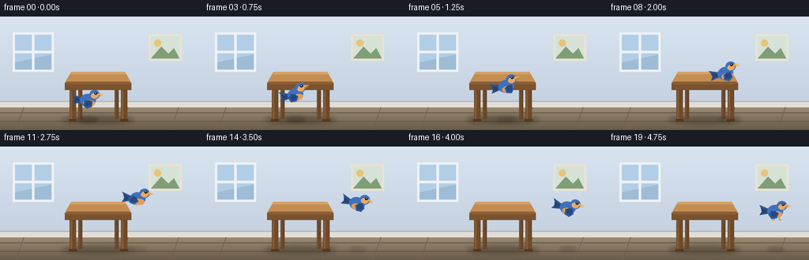
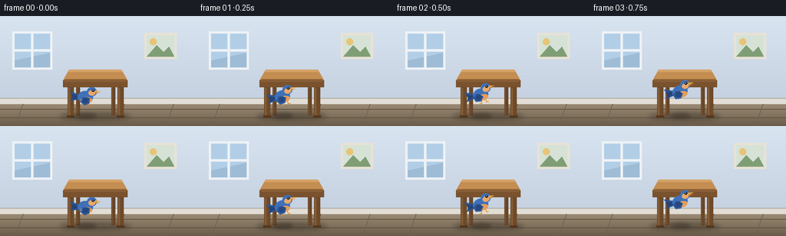
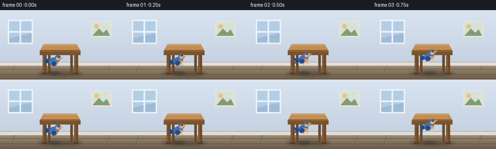
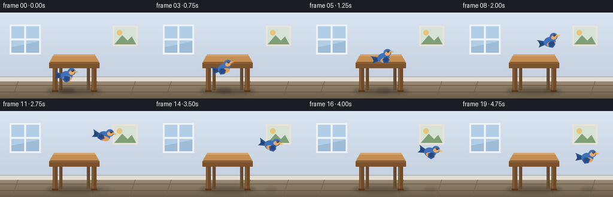
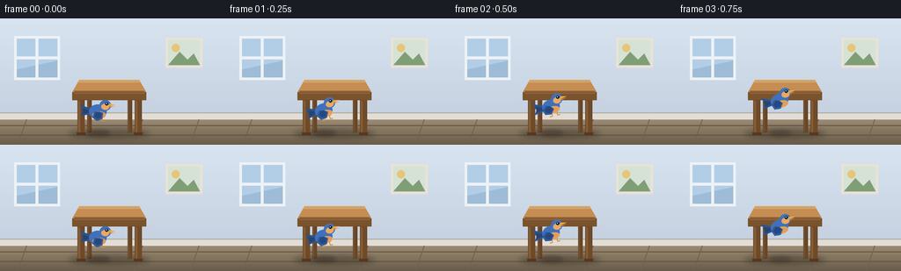
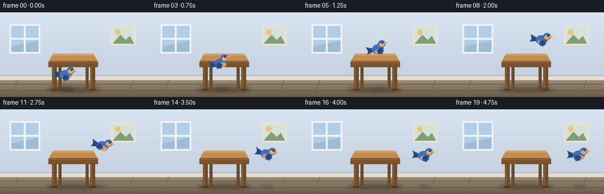
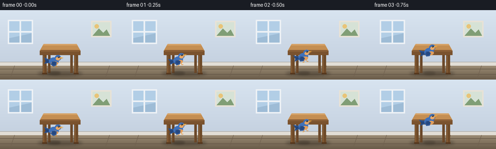
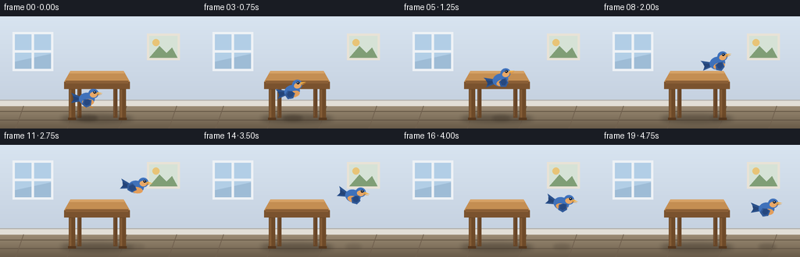

CODING AGENTS AS PIXEL WORLD MODELS
traex/Seed-2.1-Pro-0915 · dynamic_spatial_relationship_0042
点击播放 · 原生 RGB 像素
逐轮保存的候选
回放视频、检查图与代码变化。
每份候选均可单独播放。实际图片检查记录在下方工具轨迹中。
候选 01播放与检查图
点击播放 · 原生 RGB 像素


展开代码变化
--- 上一保存版本
+++ 本次保存版本
@@ -0,0 +1,233 @@
+"""Procedural t2v clip: a bird in front of a table flies to the table's right.
+
+Renders 20 RGB frames at 256x144 (4 fps) using only PIL/numpy geometry.
+Everything is drawn at 3x resolution and downsampled for smooth edges.
+"""
+import math
+import os
+
+import numpy as np
+from PIL import Image, ImageDraw
+
+import artifact_io
+
+W, H, N, FPS = 256, 144, 20, 4.0
+SS = 3 # supersampling factor
+CASE_DIR = os.path.dirname(os.path.abspath(__file__))
+
+FLOOR_Y = 112.0
+
+
+class Canvas:
+ """Thin wrapper that maps logical 256x144 coords onto a supersized image."""
+
+ def __init__(self, img):
+ self.d = ImageDraw.Draw(img)
+
+ def ellipse(self, box, fill=None, outline=None, width=1):
+ self.d.ellipse([v * SS for v in box], fill=fill, outline=outline, width=max(1, width * SS))
+
+ def polygon(self, pts, fill=None, outline=None):
+ self.d.polygon([(x * SS, y * SS) for x, y in pts], fill=fill, outline=outline)
+
+ def rectangle(self, box, fill=None, outline=None, width=1):
+ self.d.rectangle([v * SS for v in box], fill=fill, outline=outline, width=max(1, width * SS))
+
+ def line(self, pts, fill, width=1):
+ self.d.line([(x * SS, y * SS) for x, y in pts], fill=fill, width=max(1, round(width * SS)))
+
+
+def smoothstep(t):
+ return t * t * (3.0 - 2.0 * t)
+
+
+def build_background():
+ """Wall with window/picture, wood floor, baseboard."""
+ small = np.zeros((H, W, 3), dtype=np.float32)
+ wall_top = np.array([216, 228, 240.0])
+ wall_bot = np.array([197, 209, 224.0])
+ floor_top = np.array([160, 144, 120.0])
+ floor_bot = np.array([106, 92, 74.0])
+ for y in range(H):
+ if y < FLOOR_Y:
+ small[y] = wall_top * (1 - y / FLOOR_Y) + wall_bot * (y / FLOOR_Y)
+ else:
+ u = (y - FLOOR_Y) / (H - 1 - FLOOR_Y)
+ small[y] = floor_top * (1 - u) + floor_bot * u
+ img = Image.fromarray(small.astype(np.uint8)).resize((W * SS, H * SS), Image.Resampling.BICUBIC)
+ c = Canvas(img)
+
+ # Window on the left wall.
+ c.rectangle((16, 20, 68, 70), fill=(238, 242, 246))
+ c.rectangle((19, 23, 65, 67), fill=(178, 206, 230))
+ c.polygon([(19, 67), (65, 67), (65, 48), (19, 58)], fill=(158, 188, 214))
+ c.rectangle((40.5, 23, 43.5, 67), fill=(238, 242, 246))
+ c.rectangle((19, 43.5, 65, 46.5), fill=(238, 242, 246))
+
+ # Small framed picture on the right wall.
+ c.rectangle((188, 22, 230, 56), fill=(232, 226, 214))
+ c.rectangle((191, 25, 227, 53), fill=(214, 226, 214))
+ c.polygon([(191, 53), (204, 38), (213, 47), (220, 40), (227, 53)], fill=(128, 158, 118))
+ c.ellipse((195, 29, 204, 38), fill=(232, 196, 120))
+
+ # Baseboard and its soft top shadow.
+ c.rectangle((0, FLOOR_Y - 4, W, FLOOR_Y + 3), fill=(226, 222, 214))
+ c.rectangle((0, FLOOR_Y - 5, W, FLOOR_Y - 4), fill=(178, 176, 172))
+
+ # Floor plank seams.
+ for i, y in enumerate((122, 133)):
+ c.line([(0, y), (W, y)], fill=(96, 82, 66), width=1)
+ for x in (30, 96, 162, 226):
+ c.line([(x, FLOOR_Y + 3), (x - 10, H)], fill=(112, 96, 78), width=1)
+ return img
+
+
+def draw_table(img):
+ c = Canvas(img)
+ # Soft contact shadow on the floor.
+ shadow = Image.new("RGBA", img.size, (0, 0, 0, 0))
+ sc = Canvas(shadow)
+ sc.ellipse((78, 126, 170, 136), fill=(40, 32, 24, 90))
+ shadow = shadow.filter(__import__("PIL.ImageFilter", fromlist=["GaussianBlur"]).GaussianBlur(3 * SS))
+ img.alpha_composite(shadow)
+
+ # Back legs (slightly lighter, partly hidden by the apron).
+ for x in (99, 145):
+ c.rectangle((x, 78, x + 5, 130), fill=(104, 70, 40))
+ c.line([(x + 1, 80), (x + 1, 128)], fill=(122, 86, 52), width=1)
+
+ # Tabletop: perspective trapezoid.
+ c.polygon([(90, 70), (158, 70), (166, 84), (82, 84)], fill=(196, 142, 82))
+ c.polygon([(90, 70), (158, 70), (160, 73), (88, 73)], fill=(214, 162, 102)) # lit back strip
+ c.line([(84, 83), (164, 83)], fill=(120, 80, 44), width=1)
+ # Front apron.
+ c.rectangle((82, 84, 166, 93), fill=(122, 82, 46))
+ c.line([(84, 85.5), (164, 85.5)], fill=(148, 102, 60), width=1)
+
+ # Front legs.
+ for x in (88, 153):
+ c.rectangle((x, 93, x + 8, 132), fill=(110, 74, 40))
+ c.rectangle((x + 1, 94, x + 3, 131), fill=(132, 92, 54))
+ c.rectangle((x - 1, 130, x + 9, 133), fill=(86, 56, 30))
+
+
+def render_bird_tile(flap_angle, show_feet):
+ """Bird facing +x, origin at body center; tile is 48x36 logical units."""
+ tw, th = 48, 36
+ ox, oy = tw / 2.0, th / 2.0
+ tile = Image.new("RGBA", (tw * SS, th * SS), (0, 0, 0, 0))
+ d = ImageDraw.Draw(tile)
+
+ def p(pt):
+ return ((pt[0] + ox) * SS, (pt[1] + oy) * SS)
+
+ def ellipse(box, fill):
+ d.ellipse([(box[0] + ox) * SS, (box[1] + oy) * SS,
+ (box[2] + ox) * SS, (box[3] + oy) * SS], fill=fill)
+
+ def poly(pts, fill):
+ d.polygon([p(q) for q in pts], fill=fill)
+
+ def rot(pt, center, ang):
+ dx, dy = pt[0] - center[0], pt[1] - center[1]
+ ca, sa = math.cos(ang), math.sin(ang)
+ return (center[0] + dx * ca - dy * sa, center[1] + dx * sa + dy * ca)
+
+ body = (63, 113, 186, 255)
+ body_dark = (44, 82, 140, 255)
+ belly = (226, 158, 92, 255)
+ beak_hi = (242, 170, 64, 255)
+ beak_lo = (214, 134, 44, 255)
+
+ # Tail feathers.
+ poly([(-9, -3), (-21, -8), (-17, -1), (-21, 5), (-9, 3)], body_dark)
+ poly([(-10, -1), (-19, -4), (-18, 0), (-19, 3), (-10, 1)], (36, 68, 120, 255))
+
+ # Feet (only when near perched).
+ if show_feet:
+ d.line([p((-2, 6)), p((-2, 11))], fill=beak_lo, width=SS)
+ d.line([p((4, 6)), p((4, 11))], fill=beak_lo, width=SS)
+ d.line([p((-2, 11)), p((-5, 11))], fill=beak_lo, width=SS)
+ d.line([p((4, 11)), p((7, 11))], fill=beak_lo, width=SS)
+
+ # Body, belly and head.
+ ellipse((-11, -8, 9, 8), body)
+ ellipse((-7, 0, 8, 8), belly)
+ ellipse((1, -13, 14, -1), body)
+ ellipse((3, -9, 12, -2), (232, 168, 104, 255)) # warm throat
+
+ # Wing, rotated around the shoulder for the flap.
+ shoulder = (0.0, -3.0)
+ wing_pts = [(0, 0), (5, 1.5), (4, 8.5), (-2, 11), (-7, 7), (-5, 0.5)]
+ poly([rot(q, shoulder, flap_angle) for q in wing_pts], (50, 90, 152, 255))
+ inner = [(0.5, 0.5), (3.5, 2), (2.5, 7), (-1.5, 8.5), (-4.5, 6), (-3.5, 1.5)]
+ poly([rot(q, shoulder, flap_angle) for q in inner], (38, 72, 128, 255))
+
+ # Beak and eye.
+ poly([(12, -9), (19, -7.2), (12, -6)], beak_hi)
+ poly([(12, -6), (18, -5.6), (12, -4.4)], beak_lo)
+ ellipse((7.6, -10.2, 10.8, -7.0), (20, 26, 36, 255))
+ ellipse((8.5, -9.6, 9.6, -8.5), (255, 255, 255, 255))
+ return tile
+
+
+def bird_positions():
+ """Arc from in front of the table to clearly to its right."""
+ x0, x1 = 112.0, 214.0
+ y0, y1 = 106.0, 82.0
+ arc = 27.0
+ xs, ys = [], []
+ for i in range(N):
+ e = smoothstep(i / (N - 1))
+ xs.append(x0 + (x1 - x0) * e)
+ ys.append(y0 + (y1 - y0) * e - arc * math.sin(math.pi * e))
+ return xs, ys
+
+
+def make_frame(i, xs, ys, background):
+ img = background.copy().convert("RGBA")
+ draw_table(img)
+
+ t = i / (N - 1)
+ x, y = xs[i], ys[i]
+
+ # Bird contact shadow: fades and narrows as the bird gains height.
+ height = float(np.clip((108.0 - y) / 46.0, 0.0, 1.0))
+ shadow = Image.new("RGBA", img.size, (0, 0, 0, 0))
+ Canvas(shadow).ellipse(
+ (x - 13 + 3 * height, 127, x + 13 - 3 * height, 134),
+ fill=(36, 28, 20, int(85 * (1 - 0.65 * height))),
+ )
+ shadow = shadow.filter(__import__("PIL.ImageFilter", fromlist=["GaussianBlur"]).GaussianBlur(2 * SS))
+ img.alpha_composite(shadow)
+
+ # Flap envelope: calm at the perch, strong in flight, settling at the end.
+ envelope = 0.3 + 0.7 * math.sin(math.pi * t) ** 0.6
+ flap = math.radians(48) * envelope * math.sin(2 * math.pi * 2.25 * t)
+ show_feet = t < 0.12 or t > 0.92
+ tile = render_bird_tile(flap, show_feet)
+
+ # Pitch follows the flight direction.
+ if 0 < i < N - 1:
+ vx, vy = xs[i + 1] - xs[i - 1], ys[i + 1] - ys[i - 1]
+ pitch = max(-14.0, min(14.0, -math.degrees(math.atan2(vy, max(vx, 1e-6))) * 0.7))
+ else:
+ pitch = 0.0
+ tile = tile.rotate(pitch, resample=Image.Resampling.BICUBIC, expand=True)
+ img.alpha_composite(tile, (round(x * SS - tile.width / 2), round(y * SS - tile.height / 2)))
+
+ return np.asarray(img.convert("RGB").resize((W, H), Image.Resampling.LANCZOS), dtype=np.uint8)
+
+
+def main():
+ background = build_background()
+ xs, ys = bird_positions()
+ frames = [make_frame(i, xs, ys, background) for i in range(N)]
+ frames = np.stack(frames, axis=0)
+ assert frames.shape == (N, H, W, 3) and frames.dtype == np.uint8
+ artifact_io.save(frames, CASE_DIR)
+ print(f"saved {N} frames ({W}x{H}, {FPS} fps) to {CASE_DIR}")
+
+
+if __name__ == "__main__":
+ main()
候选 02播放与检查图
点击播放 · 原生 RGB 像素


展开代码变化
--- 上一保存版本
+++ 本次保存版本
@@ -175,7 +175,7 @@
"""Arc from in front of the table to clearly to its right."""
x0, x1 = 112.0, 214.0
y0, y1 = 106.0, 82.0
- arc = 27.0
+ arc = 40.0
xs, ys = [], []
for i in range(N):
e = smoothstep(i / (N - 1))
@@ -204,7 +204,7 @@
# Flap envelope: calm at the perch, strong in flight, settling at the end.
envelope = 0.3 + 0.7 * math.sin(math.pi * t) ** 0.6
flap = math.radians(48) * envelope * math.sin(2 * math.pi * 2.25 * t)
- show_feet = t < 0.12 or t > 0.92
+ show_feet = t < 0.12
tile = render_bird_tile(flap, show_feet)
# Pitch follows the flight direction.
候选 03播放与检查图
点击播放 · 原生 RGB 像素


展开代码变化
--- 上一保存版本
+++ 本次保存版本
@@ -174,8 +174,8 @@
def bird_positions():
"""Arc from in front of the table to clearly to its right."""
x0, x1 = 112.0, 214.0
- y0, y1 = 106.0, 82.0
- arc = 40.0
+ y0, y1 = 106.0, 78.0
+ arc = 50.0
xs, ys = [], []
for i in range(N):
e = smoothstep(i / (N - 1))
候选 04播放与检查图
点击播放 · 原生 RGB 像素


展开代码变化
--- 上一保存版本
+++ 本次保存版本
@@ -180,7 +180,9 @@
for i in range(N):
e = smoothstep(i / (N - 1))
xs.append(x0 + (x1 - x0) * e)
- ys.append(y0 + (y1 - y0) * e - arc * math.sin(math.pi * e))
+ # Rise quickly after takeoff, glide high, then descend on the right.
+ q = 1.0 - (1.0 - e) ** 1.8
+ ys.append(y0 + (y1 - y0) * e - arc * math.sin(math.pi * q))
return xs, ys
可观测工具轨迹
实际执行的命令与返回图片。
命令 1exit 0
/bin/bash -lc 'cat prompt.txt GENERATION_RULES.md task_spec.json 2>/dev/null | head -200'
命令 2exit 0
/bin/bash -lc 'ls -la'
命令 3exit 0
/bin/bash -lc 'cat artifact_io.py'
命令 4exit 0
/bin/bash -lc 'cd "$(pwd)" && python generate.py'
命令 5exit 0
/bin/bash -lc 'python generate.py'
命令 6exit 0
/bin/bash -lc 'python generate.py && ls -la'
命令 7exit 0
/bin/bash -lc 'python generate.py'
视觉工具实际返回图片 1

视觉工具实际返回图片 2

视觉工具实际返回图片 3

视觉工具实际返回图片 4

保存候选 4 份；完成命令 7 次；可验证图片返回 4 张。原始 API 响应与完整日志保留在本地。